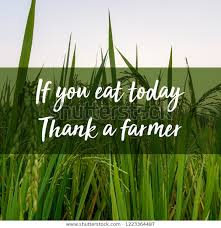
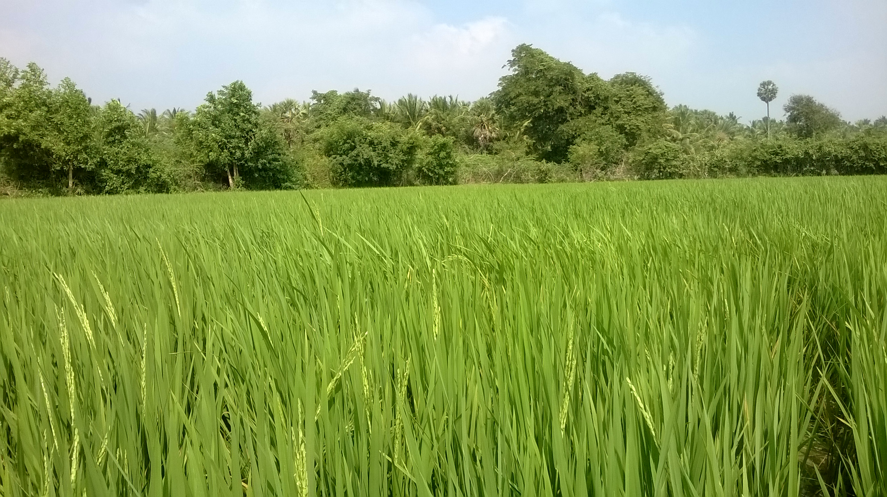
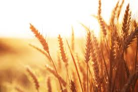
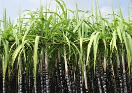

Agriculture is the science and art of cultivating plants and livestock. Agriculture was the key development in the rise of sedentary human civilization, whereby farming of domesticated species created food surpluses that enabled people to live in cities.
Rice, edible starchy cereal grain and the plant by which it is produced. Roughly one-half of the world population, including virtually all of East and Southeast Asia, is wholly dependent upon rice as a staple food; 95 percent of the world’s rice crop is eaten by humans.
The principal rice-producing countries are China, India, Japan, Bangladesh, Indonesia, Thailand, and Myanmar (Burma). Other important producers are Vietnam, Brazil, South Korea, the Philippines, and the United States. In the late 20th century the world rice crop averaged between 800 billion and 950 billion pounds annually and was cultivated on an average of about 358 million acres (145 million hectares).
The harvested rice kernel, known as paddy, or rough, rice, is enclosed by the hull, or husk. Milling usually removes both the hull and bran layers of the kernel, and a coating of glucose and talc is sometimes applied to give the kernel a glossy finish. Rice that is processed to remove only the husks, called brown rice, contains about 8 percent protein and small amounts of fats and is a source of thiamine, niacin, riboflavin, iron, and calcium. Rice that is milled to remove the bran as well is called white rice and is greatly diminished in nutrients. When white rice forms a major portion of the diet, there is a risk of beriberi, a disease resulting from a deficiency of thiamine and minerals. Parboiled white rice is processed before milling to retain most of the nutrients, and enriched rice has iron and B vitamins added to it. Rice is cooked by boiling. It is eaten alone and in a great variety of soups, side dishes, and main dishes in Oriental, Middle Eastern, and many other cuisines.
Wheat is a grass widely cultivated for its seed, a cereal grain which is a worldwide staple food. The many species of wheat together make up the genus Triticum; the most widely grown is common wheat (T. aestivum). The archaeological record suggests that wheat was first cultivated in the regions of the Fertile Crescent around 9600 BCE. Botanically, the wheat kernel is a type of fruit called a caryopsis.
The nutritional composition of the wheat grain varies somewhat with differences in climate and soil. On an average, the kernel contains 12 percent water, 70 percent carbohydrates, 12 percent protein, 2 percent fat, 1.8 percent minerals, and 2.2 percent crude fibres. Thiamin, riboflavin, niacin, and small amounts of vitamin A are present, but the milling processes removes most of those nutrients with the bran and germ.
The greatest portion of the wheat flour produced is used for breadmaking. Wheats grown in dry climates are generally hard types, having protein content of 11–15 percent and strong gluten (elastic protein). The hard type produces flour best suited for breadmaking. The wheats of humid areas are softer, with protein content of about 8–10 percent and weak gluten. The softer type of wheat produces flour suitable for cakes, crackers, cookies, and pastries and household flours. Durum wheat semolina (from the endosperm) is used for making pastas, or alimentary pastes.
Sugarcane is the world's largest crop by production quantity, with 1.8 billion tonnes produced in 2017, with Brazil accounting for 40% of the world total. In 2012, the Food and Agriculture Organization estimated it was cultivated on about 26 million hectares (64 million acres), in more than 90 countries.
Sugarcane is grown in various kinds of soils, such as red volcanic soils and alluvial soils of rivers. The ideal soil is a mixture of sand, silt, and clay particles, with a measure of organic material. The land is plowed and left to weather for a time before subsoiling (stirring up the subsoil) is carried out. The crop demands a well-drained soil, and drains—on the surface, underground, or both—are provided according to the topographic conditions of the fields.
To attain good yields, sugarcane requires 2,000 to 2,300 mm (80 to 90 inches) of water during the growing period. When precipitation is deficient, irrigation, either by spraying or by applying water in furrows, can make up for the deficiency. The growth period for cane crops varies considerably according to the region: 8–9 months in Louisiana, U.S.; 15 months in Australia and Taiwan; 18–22 months in Hawaii, South Africa, and Peru. The lowest temperature for good cane-plant growth is about 20 °C (68 °F). Continuous cooler temperature promotes the maturation of cane, as does withholding water. Harvesting and milling begin in the dry, relatively cool season of the year and last for five to six months
| Agriculture Websites | URL |
|---|---|
| Department of Agriculture, Cooperation and Farmers Welfare | http://agricoop.nic.in/ |
| For Indian Agriculture College/Universities News | http://agricollegenews.com/ |
| Agricultural and Processed Food Export Development Authority | http://www.apeda.in |
| UpAgriculture.org | http://www.upagriculture.org/ |
| For Agriculture Insurance | http://agriinsurance.com/ |
| For AgTech News | http://agtechnews.com/ |
| Ministry of Rural Development | http://rural.nic.in |
| For Indian Agriculture Retailers | http://agriretailers.com/ |
| Indian Society of Agribusiness Professionals | http://www.isapindia.org/isap/ |
| Farmers’ Portal | http://farmer.gov.in/ |
| For Tractor News, Tractor Loans, Tractor Insurance | http://tractorbuyersguide.in/ |
| For Agriculture Jobs | http://www.indiaagrijobs.com/ |
| india.gov.in National Portal of India | http://india.gov.in/topics/agriculture |
| mKisan (Help through mobile messaging for farmers) | http://mkisan.gov.in/ |